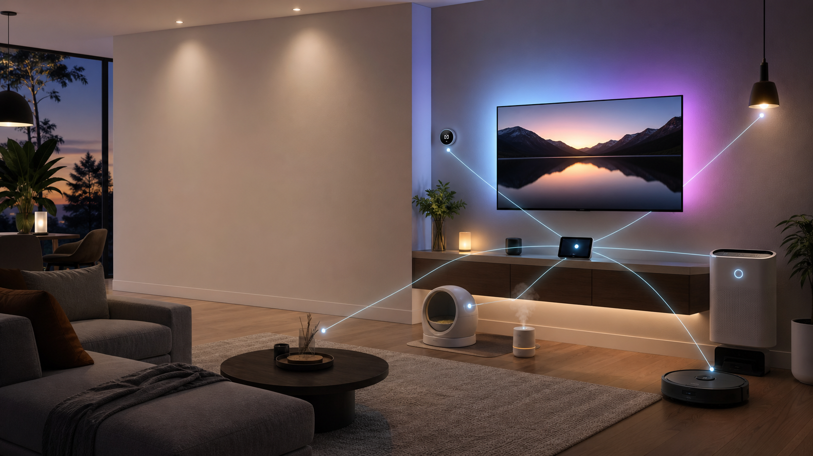

Apartment layout
Place devices where the floor plan helps them
The goal is not more gadgets. It is fewer control points, cleaner sight lines, and routines that fit how a one-bedroom apartment is actually used.
Kitchen
Pura Mini
Great room
TV backlight, Govee bulbs, CleanForce, Dreame dock
Entry
SwitchBot Remote
Laundry
Hub shelf
Bath
Pura schedule
Walk-in closet
Storage-safe zone
Bedroom
Bulb, thermostat routine, Pura Home
Deck
No permanent devices
Hub location
Put Home Assistant and the SwitchBot hub near the entry/laundry/closet wall if there is power. It is central to the great room, bedroom, bath, and kitchen.
TV wall
The great room is the lighting anchor. Put the Govee TV backlight on the TV wall and use two bulbs for the living area instead of trying to light every corner.
Robot path
Dock the Dreame in the great room or near the kitchen edge with a straight exit path. Avoid the bedroom doorway pinch point until mapping is complete.
Air and scent
Use the CleanForce in the great room for whole-apartment air movement. Keep Pura schedules subtle because scent travels fast in 764 sq.ft.
Architecture
Recommended control layers
For a one-bedroom apartment, the best architecture is compact: one IoT network, one dashboard, one voice layer, and a few physical fallbacks.
Layer 1
Home Assistant hub
Run on Home Assistant Green, a mini PC, or Raspberry Pi. It becomes the single dashboard, rules engine, and device state memory.
- Local dashboards
- Scene orchestration
- Cross-brand automations
Device map
Your gear by zone and role
Filter the inventory to see what each item should do in the system.
Automation playbook
Scenes that make the house feel intentional
These are the highest-value routines for the devices you listed.
Network plan
Make Wi-Fi the boring part
Most of this gear depends on 2.4 GHz Wi-Fi or vendor cloud APIs, so network hygiene matters more than flashy complexity.
Dedicated IoT SSID
Create a 2.4 GHz network named something simple like Nisha-IoT. Keep phones and laptops on the main network.
Guest-style isolation
Let IoT devices reach the internet and Home Assistant, but limit direct access to your personal devices where your router allows it.
Bluetooth bridge placement
Put the SwitchBot hub near the Button Pusher and Remote. Bluetooth automation quality is mostly about distance and walls.
Fallback controls
Keep the SwitchBot Remote mapped to essential scenes so lights or buttons still work when a phone app is inconvenient.
Rollout
Install in this order
Start with the network and hub, then add devices by dependency and daily value.